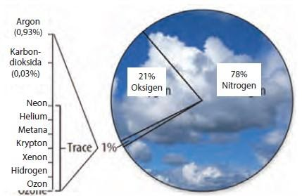
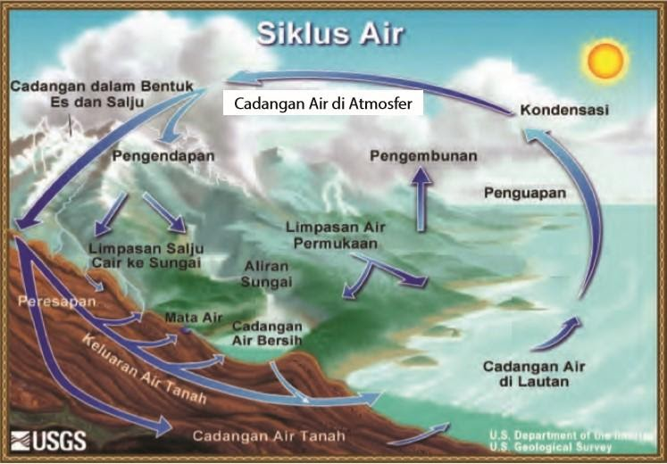

Bab 11 Lapisan Bumi
Atmosfer
Atmosfer berasal dari 2 kata Yunani, yakni atmos yang berarti uap dan sphaira yang berarti lapisan. Jadi, atmosfer adalah lapisan uap (udara) yang menyelimuti bumi. Atmosfer terdiri atas campuran gas, sedikit cairan dan padatan yang menyelimuti bumi mulai dari permukaan bumi hingga luar angkasa.
Atmosfer terbentuk dari letusan gunung berapi yang kaya nitrogen dan karbon dioksida, tetapi sedikit oksigen. Kemudian, organisme fotosintetik mengolah karbon dioksida menjadi oksigen dan melepaskan oksigen tersebut ke atmosfer sebagai hasil pengolahan makanan yang memanfaatkan cahaya matahari.
Atmosfer tersusun atas gas nitrogen sebesar 78%, Oksigen 21%, Karbon dioksida, argon, dan beberapa gas lain menyusun sebagian kecil dari atmosfer. Berikut komponen penyusun atmosfer
Atmosfer tersusun atas 2 bagian yaitu bagian bawah terdiri dari Troposfer dan Stratosfer, bagian bawah terdiri dari Mesosfer, Termosfer, dan Eksosfer.
-
Troposfer merupakan lapisan atmosfer paling bawah. Ketinggiannya mulai dari permukaan laut (0 km) hingga 10 km di atas permukaan laut (dpl). Sebagian besar troposfer berbentuk uap air dan 75% terdiri atas gas-gas atmosfer. Troposfer merupakan tempat berlangsungnya sistem bumi, seperti hujan, angin, salju, awan dan aktivitas makhluk hidup, termasuk manusia.
-
Stratosfer : pesawat yang melintas di udara berada di lapisan stratosfer. Stratosfer memiliki ketinggian antara 10 – 50 km dpl. Lapisan stratosfer memiliki sedikit awan, namun tidak ada aktivitas cuaca, sehingga tidak mengganggu penerbangan. Sebagian besar stratosfer terdiri atas gas ozon (O3).
-
Mesosfer : ketika melihat meteor, terlihat seperti meteor melintasi bumi kemudian hilang. Namun sebenarnya meteor sedang menuju bumi dan terbakar habis di atmosfer. Lapisan atmosfer yang membakar meteor tersebut adalah mesosfer. Mesosfer memiliki ketinggian 50 – 85 km dpl dan menjadi lapisan pelindung bumi dari benda-benda luar angkasa.
-
Termosfer: memiliki ketinggian antara 85-500 km dpl. Dinamakan termosfer karena suhu ang sangat panas yakni mencapai 1.982°C. Termosfer berfungsi sebagai tempat mengorbitnya teleskop Hubble dan pesawat ulang-alik, serta melindungi bumi dari radiasi ultraviolet.
-
Eksosfer : terdapat pada ketinggian lebih dari 500 km dpl. Kandungan utama dari eksosfer adalah hidrogen. Jika melihat video atau film penjelajahan luar angkasa, terlihat bahwa pesawat luar angkasa dan satelit yang mengorbit di eksosfer tidak dapat bergerak bebas seperti pesawat biasa.
Litosfer
Litosfer berasal dari bahasa Yunani yaitu lithos (batuan) dan sphaira (lapisan). Litosfer merupakan lapisan batuan yang ada di bumi. Dalam pengertian luas, litosfer diartikan sebagai seluruh bagian padat bumi termasuk intinya. Struktur padat bumi terdiri atas kerak bumi, mantel, dan inti bumi.
Kerak bumi dibedakan menjadi kerak benua dan kerak samudra. Kerak benua merupakan kerak bumi yang berada di daratan. Kerak samudra merupakan kerak bumi yang berada di dalam laut. Mantel bumi terdiri atas mantel atas dan mantel bawah.
Inti bumi dibedakan menjadi 2, yaitu inti luar yang berupa cairan pekat dan inti dalam yang bersifat pekat hampir menyerupai padatan. Berdasar struktur bumi, ada dua teori mendasar yang perlu dipelajari yaitu teori tektonik lempeng, teori gempa bumi dan gunung berapi.
Hidrosfer
Hidrosfer berasal dari kata hidros yang berarti air dan sphaira yang berarti selimut. Hidrosfer adalah lapisan air yang menyelimuti bumi. Hampir 70% bagian bumi terdiri atas air. Hidrosfer meliputi danau, sungai, air tanah, uap air di udara, laut dan samudra. Air di bumi memiliki siklus hidrologi yang merupakan proses daur ulang air secara terus menerus.
Berikut adalah siklus hidrologi:
Siklus air dimulai ketika panas matahari menguapkan air di laut dan di permukaan Bumi (evaporasi). Uap air berkumpul di angkasa dan terjadi kondensasi (pengembunan) membentuk awan. Awan berjalan searah dengan hembusan angin. Jika awan sudah tidak dapat menampung uap dari evaporasi, maka uap air turun sebagai hujan.
Air hujan akan mengisi cadangan air yang berada di permukaan bumi. Proses ini berlangsung terus menerus. Akan tetapi, curah hujan terkadang rendah (sedikit) dan terkadang tinggi. Apabila curah hujan tinggi, simpanan air di permukaan bumi seperti waduk, danau, dan sungai meluap, sehingga berpotensi banjir.